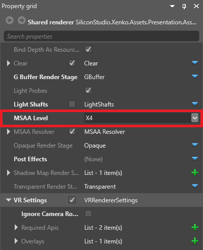

VR の有効化
初級 プログラマー
ここでは、Oculus Rift および Vive デバイスのサポートをゲームに追加する方法を説明します。Stride は他の VR デバイスをまだサポートしていません。
［Asset view］(既定では下部のペイン) で、Graphics Compositor アセットをダブルクリックします。

Graphics Compositor エディターが開きます。
Graphics Compositor エディターで、フォワード レンダラー ノードを選択します。

［Property grid］(既定では右側) で、［VR Settings］を展開します。

［Required APIs］の隣の
 (［Add a new item to the list］) をクリックします。
(［Add a new item to the list］) をクリックします。新しい API がリストに追加されます。
［Item］ドロップダウン メニューで、ゲームでサポートする VR API を選択します。

API 説明 Oculus Oculus Rift デバイスをサポートします (Oculus Rift の最善のサポート) OpenVR Vive デバイスと Oculus Rift デバイスをサポートします (Vive の最善のサポート) Dummy VR デバイスではなく、2 つのカメラ (片目に 1 つ) で画面にゲームを表示します (主として、開発に役立ちます)。Game Studio のシーン エディターでダミー ビューを表示するには、エディターがフォワード レンダラーに接続されていることを確認します。 ステップ 4 と 5 を繰り返して、必要な API をすべて追加します。
リストの順序が正しいことを確認します。ゲームは、実行時に、リストの順序でデバイスを使用しようとします。たとえば、最初の項目が Dummy の場合、ゲームは VR デバイスを使用しません。最後の項目が Dummy の場合、ゲームは使用できる VR デバイスがない場合にのみ Dummy を使用します。
順序を変更するには、各項目で選択した VR デバイスを変更します。
Tip
OpenVR API は Vive デバイスと Oculus Rift デバイスの両方をサポートしますが、Oculus API は Oculus Rift のサポートの方が優れています。このため、ほとんどの場合はリストの順序を次のようにすることをお勧めします。
項目 0: Oculus
項目 1: OpenVR
このようにすると、ゲームは、Oculus Rift デバイスが接続されている場合は Oculus API を使用し、別のデバイス (Vive など) が接続されている場合は OpenVR API を使用します。
［VRRendererSettings］を有効にします。

これで、ゲームは VR を使用できる状態になりました。
Note
API を変更した後、実行時に変更を有効にするには、プロジェクトを再ロードする必要があります (［File］>［Reload project］)。
VR のプロパティ
| プロパティ | 説明 |
|---|---|
| Ignore Camera Rotation | VR デバイス以外の入力によるカメラの移動を無効にします。VR 酔いを軽減するのに役立ちます。 |
| Resolution Scale | VR デバイスに表示される画像の解像度です。解像度が高いほど高品質の画像が生成されますが、より多くの CPU が必要になります。 |
マルチサンプル アンチエイリアシング
エイリアシング アーティファクトは、VR ではいっそう顕著になるので、フォワード レンダラーのプロパティ (VR の設定の上) で MSAA (マルチサンプル アンチエイリアシング) を有効にすることをお勧めします。

画面の同期を無効にする
パフォーマンスを最高にするには、VR ゲームを 90FPS で実行する必要があります。これは、モニターとの同期をオフにする必要があることを意味します。
現在、これを行うにはスクリプトを使用します。IsFixedTimeStep で IsDrawDesynchronized を使用することをお勧めします。
using System;
using Stride.Engine;
namespace VRSandbox
{
class VRSandboxApp
{
static void Main(string[] args)
{
using (var game = new Game())
{
// VR は 90 fps で実行する必要があるため、vsync を無効にし、描画が同期されないようにする必要がある
// 不規則な動作のキャラクター コントローラーを使用している場合は物理特性のタイム ステップも 90 fps に設定したいかもしれませんが、それはしないでください。可能な場合は運動学的剛体を使用します。
game.IsFixedTimeStep = true;
game.IsDrawDesynchronized = true;
game.GraphicsDeviceManager.SynchronizeWithVerticalRetrace = false;
game.TargetElapsedTime = TimeSpan.FromSeconds(1 / 90.0f);
game.Run();
}
}
}
}